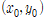
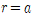
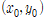
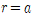

도형의 방정식 - 원의 방정식(고등학교)
|
※ 원의 방정식
[10수학02-06] 원의 방정식을 구할 수 있다. [10수학02-07] 좌표평면에서 원과 직선의 위치 관계를 이해한다. |
원의 중심이 .jpg) 이고 반지름의 길이가
이고 반지름의 길이가  인 원의 방정식의 수식은 다음과 같다.
인 원의 방정식의 수식은 다음과 같다.

(Q.8) 주어진 점과 반지름을 이용하여 원의 방정식을 구하여라.
, 
(Q.8) 주어진 점과 반지름을 이용하여 원의 방정식을 구하여라.
, 
[참고자료]
https://mathbang.net/454
강의 동영상 열기
▲
○ 참여자
- 이상구 교수 (성균관대, 수학과)
- 이재화 박사 (성균관대, 에너지환경융합 KIURI 연구단)
- 이재윤 대표 (㈜프로키언)
○ 보유 특허
- 특허명칭 : 임의 수학 문제를 제공하는 클라우드 컴퓨팅 서버 및 방법 및 기록매체
- 등록번호 : 10-1560802
- 등록국가 : 대한민국
- 등록년도 : 2015
- 발명자 : 이상구 외 6인
- 기술이전회사 : ㈜프로키언 (대표: 이재윤)
○ 사사
- 성균관대 기술지주 주식회사, 『2020년 BRIDGE+ 실용화 개발지원 과제』
- 한국연구재단 혁신성장 선도 고급연구인재 육성사업, (No.2020M3H1A1077095).